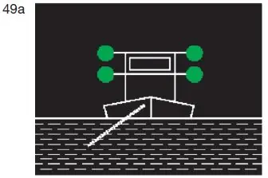
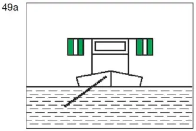
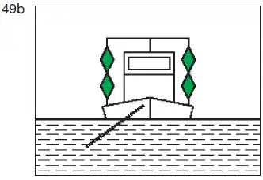
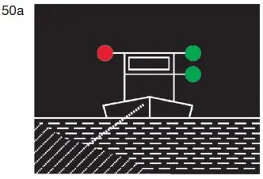
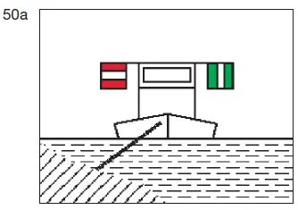
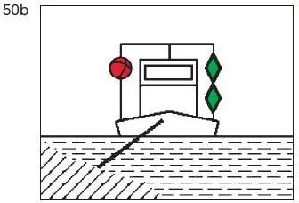
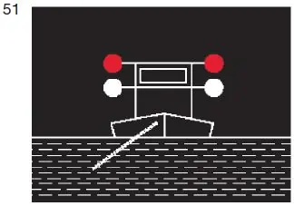
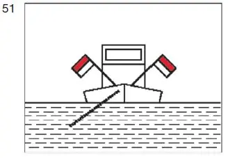
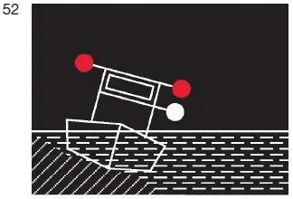
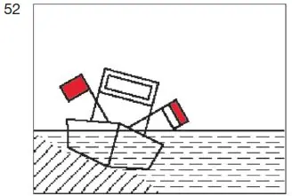

§ 3.25 Bezeichnung schwimmender Gerätebei der Arbeit sowie festgefahrener oder gesunkener Fahrzeuge(Anlage 3: Bild 49a, 49b, 50a, 50b, 51, 52)
Binnenschifffahrtsstraßen-Ordnung
1. Ein schwimmendes Gerät bei der Arbeit oder ein Fahrzeug, das in der Wasserstraße Arbeiten, Peilungen oder andere Messungen ausführt und dabei stillliegt, muss führen:
a) nach der Seite oder den Seiten, an der oder denen die Durchfahrt frei ist:
aa) bei Nacht:
übereinander zwei grüne gewöhnliche Lichter oder zwei grüne helle Lichter; |  |
bb) bei Tag: entweder
aaa) das Tafelzeichen E.1 (Anlage 7) |  |
oder
bbb) zwei grüne Doppelkegel übereinander in einem Abstand von 1,00 m |  |
und gegebenenfalls
b) nach der Seite, an der die Durchfahrt nicht frei ist:
aa) bei Nacht:
ein rotes gewöhnliches Licht oder ein rotes helles Licht in gleicher Höhe und von gleicher Stärke wie das nach Buchstabe a Doppelbuchstabe aa gezeigte oberste grüne Licht; |  |
bb) bei Tag: entweder
aaa) das Tafelzeichen A.1 (Anlage 7) in gleicher Höhe wie das Tafelzeichen nach Buchstabe a Doppelbuchstabe bb Dreifachbuchstabe aaa |  |
oder
bbb) einen roten Ball in gleicher Höhe wie der oberste Doppelkegel nach Buchstabe a Doppelbuchstabe bb Dreifachbuchstabe bbb. |  |
Wenn das in Satz 1 genannte Fahrzeug gegen Sog oder Wellenschlag geschützt werden muss, muss es führen:
a) nach der Seite oder den Seiten, an der die Durchfahrt frei ist:
aa) bei Nacht:
ein rotes gewöhnliches Licht und ein weißes gewöhnliches Licht oder ein rotes helles und ein weißes helles Licht, das rote Licht 1,00 m über dem weißen; |  |
bb) bei Tag:
eine Flagge, deren obere Hälfte rot und deren untere Hälfte weiß ist, oder zwei Flaggen übereinander, die obere rot, die untere weiß, |  |
b) nach der Seite, an der die Durchfahrt nicht frei ist:
aa) bei Nacht: ein rotes Licht in gleicher Höhe und von gleicher Stärke wie das nach Buchstabe a Doppelbuchstabe aa gezeigte rote Licht;
bb) bei Tag: eine rote Flagge in gleicher Höhe wie die weiß-rote Flagge oder die rote Flagge auf der anderen Seite.
Die Bezeichnung nach den Sätzen 1 und 2 ist so hoch zu setzen, dass sie von allen Seiten sichtbar ist. Die Flaggen können durch Tafeln gleicher Farbe ersetzt werden.
2. Ein festgefahrenes oder gesunkenes Fahrzeug muss die Bezeichnung nach Nummer 1 Satz 2 Buchstabe a und b führen. Liegt ein gesunkenes Fahrzeug so, dass die Zeichen nicht auf ihm angebracht werden können, müssen sie auf Nachen, Tonnen oder in anderer geeigneter Weise gesetzt werden.
 |  |
3. Die zuständige Behörde kann von der Führung der Bezeichnung nach Nummer 1 Satz 1 Buchstabe a und b befreien.